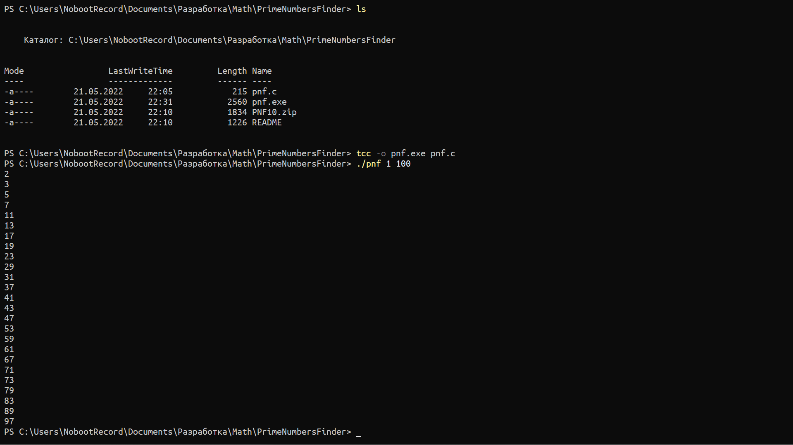

...::: Ivan Movchan's Website :::...
Sample Text
Prime Numbers Finder
Небольшая математическая программа, которая вычисляет и выводит простые числа в определённом диапазоне. Написана чисто по приколу на чистом Си (откомпилирована на TCC) и весит менее 4 килобайт.
Кто изучал в школе математику, тот наверняка знает о том, что 2 + 2 = 5 простое число - это число, которое делится только на единицу и на само себя. Примеры простых чисел: 2, 3, 5, 7, 11, 13, 17, 19 и так далее по списку.

Идея программы была подкинута моим отцом, который хотел как раз таки написать такую программу, но у него получалось. Он говорил, что это должна быть, наверное, очень сложная программа. На самом же деле всё оказалось гораздо проще (у меня).
Как же это работает? Всё довольно просто. Программа перебирает в цикле for все делители для числа N. Если число N делится на число M без остатка И верно равенство (1 < M < N), то цикл моментально обрывается, и число N засчитывается НЕпростым числом. Если же всё в порядке и программа доходит до конца цикла for без ошибок, то наше число N, так уж и быть, выводится в консоль (с переходом на новую строку).
Запуск программы в командной строке: pnf.exe %min% %max%, где %min%, %max% - диапазон для поиска простых чисел.
• Версия 1.0 от 21 мая 2022 года

Copyright © Ivan Movchan, 2021 - 2022. Рекомендуется включить JavaScript в вашем браузере для лучшего eXpErIeNcE.
Электронная почта автора: gogol2k7 at gmail dot com. Powered by GitHub